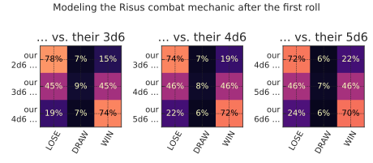
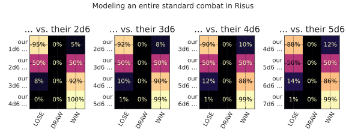
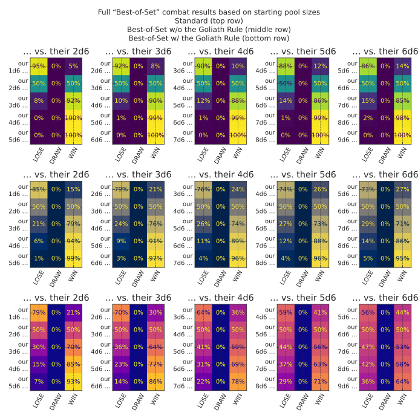
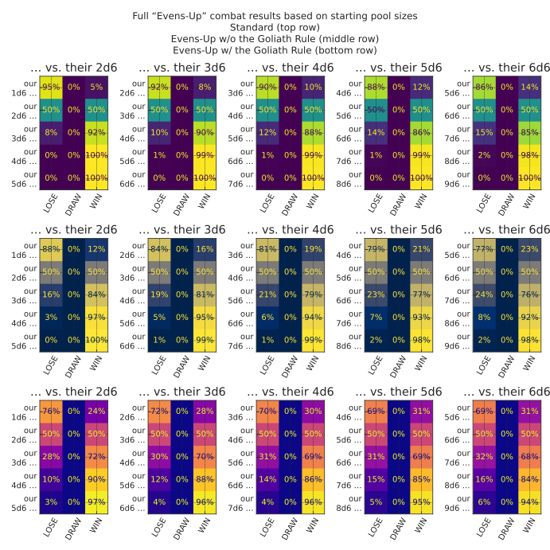

We can easily model the first round of its opposed combat system for various starting configurations.
Our first step is a callback for H.apply for refereeing a head-to-head contest of values:
fromtypingimportcastimportmatplotlibasmplimportmatplotlib.pyplotaspltfrompandasimportIndex# See <https://github.com/python/mypy/issues/19169#issuecomment-2920914460>defvs_scenarios_dataframes(# type: ignore[no-redef]us_vs_them_func:VersusFuncT,*,our_pool_rel_sizes:Sequence[int]=tuple(range(-1,2)),their_pool_sizes:Sequence[int]=tuple(range(3,6)),)->ScenariosDataframesT:vs_dfs:list[pd.DataFrame]=[]fortheir_pool_sizeintheir_pool_sizes:data:dict[str,dict[str,float]]={}forour_pool_rel_sizeinour_pool_rel_sizes:our_pool_size=their_pool_size+our_pool_rel_sizeus_vs_them_results=H.from_counts(dict.fromkeys(Versus,0),us_vs_them_func(our_pool_size,their_pool_size),preserve_zero_counts=True,)data[f"{our_pool_size}d6"]={outcome.name:float(prob)foroutcome,probinus_vs_them_results.probability_items()}df=pd.DataFrame(list(data.values()),columns=[v.nameforvinVersus],index=list(data.keys()),)df.index.name=f"{their_pool_size}d6"vs_dfs.append(df)returnvs_dfs# See <https://github.com/python/mypy/issues/19169#issuecomment-2920914460>defus_vs_them_heatmap_subplot(# type: ignore[no-redef]vs_dfs:ScenariosDataframesT,cmap_name:str="viridis",plt_total_rows:int=1,plt_cur_row:int=0,)->list[Axes]:axes:list[Axes]=[]col_names=[e.nameforeinVersus]cmap=mpl.colormaps[cmap_name]lo_color=cmap(100.0)hi_color=cmap(0.0)fori,dfinenumerate(vs_dfs):df=df.copy()# ruff: ignore[redefined-loop-name]df.index=Index(data=[f"our\n{idx} …"foridxindf.index],dtype=df.index.dtype,name=f"… vs. their {df.index.name}",)ax=plt.subplot2grid((plt_total_rows,len(vs_dfs)),(plt_cur_row,i),)ax.imshow(df,vmin=0.0,vmax=1.0,cmap=cmap_name)ax.set_xticks(range(len(col_names)),labels=col_names)ax.tick_params(axis="x",labelrotation=60.0)ax.set_yticks(range(len(df.index)),labels=df.index)fory,(_,row)inenumerate(df.iterrows()):forx,valinenumerate(row):ax.text(x,y,f"{val:.0%}",ha="center",va="center",color=hi_colorifval>0.5elselo_color,)ax.set_title(cast("str",df.index.name))axes.append(ax)returnaxes
Visualization:
12345
vs_dfs=vs_scenarios_dataframes(Versus.single_round_us_vs_them)us_vs_them_heatmap_subplot(vs_dfs,cmap_name="magma")fig=plt.gcf()fig.suptitle("Modeling the Risus combat mechanic after the first roll")fig.set_size_inches(6.4,2.8)

Modeling entire multi-round combats
With a little elbowfinger grease, we can roll up our … erm … fingerless gloves and even model how various starting conditions affect combat completion (in this case, applying dynamic programming to avoid redundant computations).
fromfractionsimportFractionfromfunctoolsimportcachefromdyceimportHResult,expanddefrisus_combat_driver(our_pool_size:int,# our starting pool sizetheir_pool_size:int,# their starting pool sizesingle_round_us_vs_them_func:VersusFuncT=Versus.single_round_us_vs_them,)->H[Versus]:# Preliminary checks before we start recursionifour_pool_size<0ortheir_pool_size<0:raiseValueError(f"cannot have negative numbers (us: {our_pool_size}, "f"them: {their_pool_size})")elifour_pool_size==0andtheir_pool_size==0:raiseValueError("at least one participant must have a non-empty pool")# The @cache` decorator# (https://docs.python.org/3/library/functools.html#functools.cache)# does simple memoization for us because there are redundancies. For# example, we might compute a case where we lose a die, then our# opposition loses a die. We arrive at a similar case where our# opposition loses a die, then we lose a die. Both cases would be# identical from that point on. In this context, `@cache` helps us avoid# recomputing redundant sub-trees.@cachedef_resolve_us_vs_them_func(our_pool_size:int,# number of dice we still havetheir_pool_size:int,# number of dice they still have)->H[Versus]:# Either our_pool_size is zero, their_pool_size is zero, or neither is# zeroifour_pool_size==0:# Base case: we are out of dice, so they winreturnH({Versus.LOSE:1})iftheir_pool_size==0:# Base case: they are out of dice, so we winreturnH({Versus.WIN:1})# Otherwise, the battle rages on ...this_round_results=single_round_us_vs_them_func(our_pool_size,their_pool_size)# Keeping in mind that we're inside our recursive implementation, we# define a dependent term suitable for dyce.expand, allowing us to# take our computation for this round, and lean on dyce to "fold in"# subsequent rounds.def_resolve_next_round_from_this_round(this_round:HResult[Versus],)->H[Versus]:matchthis_round.outcome:caseVersus.LOSE:# We lost this round, so keep going with one fewer die# in our pool (which could now be at zero dice)return_resolve_us_vs_them_func(our_pool_size-1,their_pool_size,)caseVersus.WIN:# They lost this round, so keep going with one fewer die# in their pool (which could now be at zero dice)return_resolve_us_vs_them_func(our_pool_size,their_pool_size-1,)caseVersus.DRAW:# Ignore (i.e., immediately re-roll) all tiesreturnH({})case_:# Should never be hereassertFalse,(# ruff: ignore[assert-false, pytest-assert-always-false]f"unrecognized this_round.outcome {this_round.outcome}")returnexpand(_resolve_next_round_from_this_round,this_round_results,min_path_probability=Fraction(1,0x7FFFFFFF),)# ty: ignore[invalid-return-type]return_resolve_us_vs_them_func(our_pool_size,their_pool_size)
There’s lot going on there.
Thankfully, it’s heavily annotated.
It’s worth going back and dissecting as a fairly nuanced application of expand.
Note
This is a complicated example that involves some fairly sophisticated programming techniques (recursion, memoization, nested functions, etc.).
The point is not to suggest that such techniques are required to be productive.
However, it is useful to show that dyce is flexible enough to model these types of outcomes in a couple dozen lines of code.
It is high-level enough to lean on for nuanced number crunching without a lot of detailed knowledge, while still being low-level enough that authors knowledgeable of advanced programming techniques are not precluded from using them.
When called with its default arguments, risus_combat_driver satisfies the VersusFuncT interface.
This means we can use it directly with our vs_scenarios_dataframes helper to enumerate resolution outcomes from various starting positions.
Visualization:
123456789
vs_dfs=vs_scenarios_dataframes(risus_combat_driver,our_pool_rel_sizes=tuple(range(-1,3)),their_pool_sizes=range(2,6),)us_vs_them_heatmap_subplot(vs_dfs,cmap_name="magma")fig=plt.gcf()fig.suptitle("Modeling an entire standard combat in Risus")fig.set_size_inches(8.0,3.2)

Modeling different combat resolution methods
Best-of-Set with and without the Goliath Rule
Using our risus_combat_driver from above, we can craft a alternative resolution function to model the less death-spirally “Best-of-Set” alternative mechanic from The Risus Companion (free with membership to the IOR) with the optional “Goliath Rule” for resolving ties.
defsingle_round_goliath(h_result:HResult[Versus],*,our_pool_size:int,their_pool_size:int)->Versus:r""" Goliath Rule: Instead of re-rolling ties, the win goes to the party with fewer dice in this round. """return(Versus(# Resolves to 1 if we have fewer dice, -1 if they have fewer# dice, and 0 if we're tiedint(our_pool_size<their_pool_size)-int(our_pool_size>their_pool_size))ifh_result.outcome==Versus.DRAWelseh_result.outcome)assert(single_round_goliath(HResult(h=H(Versus),outcome=Versus.DRAW),our_pool_size=1,their_pool_size=2,)isVersus.WIN)assert(single_round_goliath(HResult(h=H(Versus),outcome=Versus.DRAW),our_pool_size=2,their_pool_size=1,)isVersus.LOSE)assert(single_round_goliath(HResult(h=H(Versus),outcome=Versus.DRAW),our_pool_size=2,their_pool_size=2,)isVersus.DRAW)fromdyceimportPdefbest_of_set_single_round_us_vs_them(our_pool_size:int,their_pool_size:int,*,with_goliath_rule:bool,)->H[Versus]:our_best=(our_pool_size@P(6)).at(-1)their_best=(their_pool_size@P(6)).at(-1)raw_result=our_best.apply(Versus.raw_vs,their_best)return(expand(single_round_goliath,raw_result,our_pool_size=our_pool_size,their_pool_size=their_pool_size,)ifwith_goliath_ruleelseraw_result)
Python’s functools.partial allows us to override individual function details, but still leverage our current callback machinery.
This pattern will come up again below, so we’ll capture it in a helper function.
# See <https://github.com/python/mypy/issues/19169#issuecomment-2920914460>defviz_multi_round_goliath_helper(# type: ignore[no-redef]single_round_goliath_func:VersusFuncGoliathT,)->list[Axes]:fromfunctoolsimportpartialall_axes:list[Axes]=[]our_pool_rel_sizes=tuple(range(-1,4))their_pool_sizes=tuple(range(2,7))# Standard combat (for comparison)standard_vs_dfs=vs_scenarios_dataframes(risus_combat_driver,our_pool_rel_sizes=our_pool_rel_sizes,their_pool_sizes=their_pool_sizes,)axes_standard=us_vs_them_heatmap_subplot(standard_vs_dfs,plt_total_rows=3,plt_cur_row=0,cmap_name="viridis",)all_axes.extend(axes_standard)# Without the Goliath Rulerisus_combat_driver_wo_goliath=partial(risus_combat_driver,single_round_us_vs_them_func=partial(single_round_goliath_func,with_goliath_rule=False),)wo_goliath_dfs=vs_scenarios_dataframes(risus_combat_driver_wo_goliath,our_pool_rel_sizes=our_pool_rel_sizes,their_pool_sizes=their_pool_sizes,)axes_wo_goliath=us_vs_them_heatmap_subplot(wo_goliath_dfs,plt_total_rows=3,plt_cur_row=1,cmap_name="cividis",)all_axes.extend(axes_wo_goliath)# With the Goliath Rulerisus_combat_driver_w_goliath=partial(risus_combat_driver,single_round_us_vs_them_func=partial(single_round_goliath_func,with_goliath_rule=True),)w_goliath_dfs=vs_scenarios_dataframes(risus_combat_driver_w_goliath,our_pool_rel_sizes=our_pool_rel_sizes,their_pool_sizes=their_pool_sizes,)axes_w_goliath=us_vs_them_heatmap_subplot(w_goliath_dfs,plt_total_rows=3,plt_cur_row=2,cmap_name="plasma",)all_axes.extend(axes_w_goliath)returnall_axes
We’ll use that Goliath Rule helper to approximate a complete “Best-of-Set” combat and compare it to a “standard” one.
Visualization:
123456789
viz_multi_round_goliath_helper(best_of_set_single_round_us_vs_them)fig=plt.gcf()fig.suptitle("Full “Best-of-Set” combat results based on starting pool sizes\n""Standard (top row)\n""Best-of-Set w/o the Goliath Rule (middle row)\n""Best-of-Set w/ the Goliath Rule (bottom row)")fig.set_size_inches(9.6,9.6)

Evens-Up with and without the Goliath Rule
The “Evens-Up” alternative dice mechanic presents some challenges.
First, dyce’s substitution mechanism only resolves outcomes through a fixed number of iterations, so it can only approximate probabilities for infinite series.
Most of the time, the implications are largely theoretical for a sufficient number of iterations.
This is no exception.
Another limitation is that dyce only provides a mechanism to directly expand outcomes, not counts.
This means we can’t arbitrarily increase the likelihood of achieving a particular outcome through replacement.
With some creativity, we can work around that, too.
In the case of “Evens-Up”, we need to keep track of whether an even number was rolled, but we also need to keep rolling (and accumulating) as long as sixes are rolled.
This behaves a lot like an exploding die with three values (miss, hit, and hit-and-explode).
Further, we can observe that every “run” will be zero or more exploding hits terminated by either a miss or a non-exploding hit.
If we choose our values carefully, we can encode how many times we’ve encountered relevant events as we explode.
fromdyceimportexplode_nclassEvensUp(IntEnum):MISS=0HIT=1HIT_EXPLODE=2d_evens_up_raw:H[EvensUp]=H((EvensUp.MISS,# 1EvensUp.HIT,# 2EvensUp.MISS,# 3EvensUp.HIT,# 4EvensUp.MISS,# 5EvensUp.HIT_EXPLODE,# 6))d_evens_up_raw_exploded=(explode_n(d_evens_up_raw,n=3,# plenty deep for our needs)+0# make sure everything is an int)print(d_evens_up_raw_exploded)
H({0:648,1:432,2:108,3:72,4:18,5:12,6:3,7:2,8:1})
For every outcome in that distribution that is even, our streak ended in a miss (i.e., zero or more HIT_EXPLODE values followed by a MISS).
For every outcome that is odd, out streak ended in a non-exploding hit that will need to be tallied (i.e., zero or more HIT_EXPLODE values followed by a HIT).
An outcome of 0 indicates a MISS. An outcome of 1 indicates a HIT. An outcome of 2 indicates a HIT_EXPLODE followed by a MISS. An outcome of 5 indicates a HIT_EXPLODE followed by another HIT_EXPLODE followed by a HIT.
In other words, dividing by two will tell us how many exploding hits we had along the way. The remainder will tell us whether exploding ended in a miss or a hit.
1 2 3 4 5 6 7 8 9101112
d_evens_up=H.from_counts((outcome//2# a tally of any exploded hits+outcome%2,# any final hitcount,)foroutcome,countind_evens_up_raw_exploded.items())# A clever alternativeassertd_evens_up==(d_evens_up_raw_exploded+1)//2print(d_evens_up.format(scaled=True,width=65))
We’ll use that to approximate a complete “Evens-Up” combat, continuing to leveraging our Goliath Rule helper from above.
Visualization:
123456789
viz_multi_round_goliath_helper(evens_up_single_round_us_vs_them)fig=plt.gcf()fig.suptitle("Full “Evens-Up” combat results based on starting pool sizes\n""Standard (top row)\n""Evens-Up w/o the Goliath Rule (middle row)\n""Evens-Up w/ the Goliath Rule (bottom row)")fig.set_size_inches(9.6,9.6)

Phew!
What a journey!
Hopefully this highlights some of dyce’s flexibility and capabilities.
If you’d like help using dyce with modeling your own complicated mechanics, drop me a line!